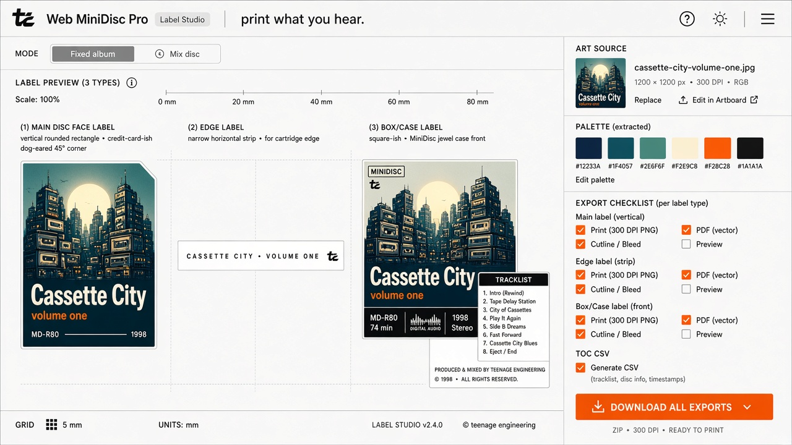
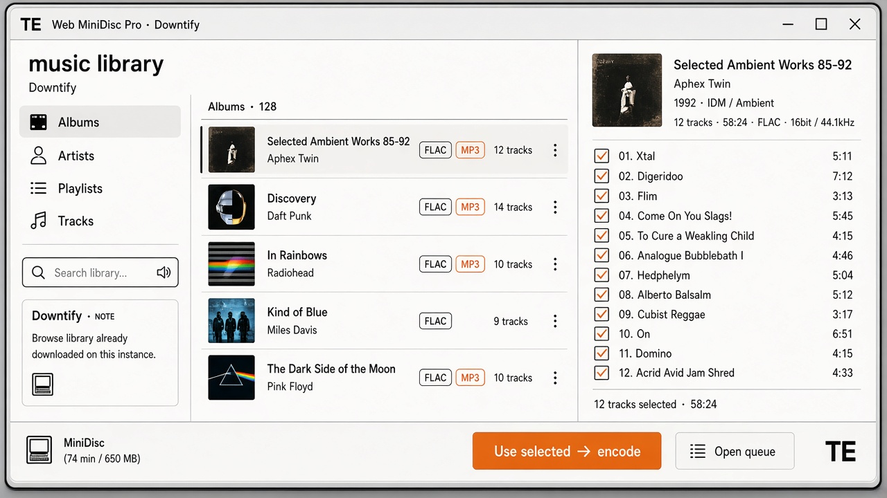
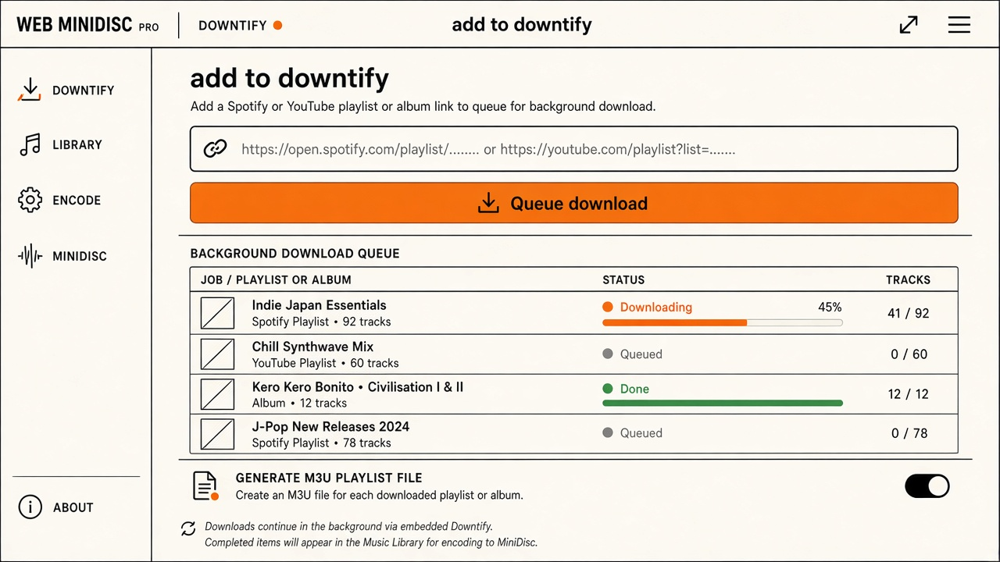

Interface study · series 01 · high-fidelity visuals
web minidisc pro
Teenage Engineering–influenced industrial UI direction. Correct MiniDisc cartridge geometry, printable main / edge / box labels, album art on the deck, plus Downtify library browse and background playlist downloads.
-

01 ConnectNetMD / Remote / HiMD with a real MiniDisc cartridge, not a CD.
-

02 Deck · now playingAlbum art as a primary surface beside the LCD, transport, and tracklist.
-

03 TransferDropzone, SP / LP2 / LP4 modules, external encoder queue.
-

04 Label Studio · fixed albumMain cartridge label (dog-ear), edge strip, and case/box label.
-

05 Label Studio · mix discGenerated artwork mapped onto main, edge, and box MiniDisc labels.
-

06 Disc archivesKnown MiniDiscs with cartridge face previews and label status.
-

07 SystemPreferences, encoders, factory / dump / wipe behind an explicit gate.
-

08 Export packPhysical main label, edge strip, and MiniDisc box label deliverables.
-

09 Downtify · music libraryBrowse albums / artists / playlists / tracks, select, send to encode.
-

10 Downtify · add playlistQueue Spotify/YouTube playlists for embedded background download.